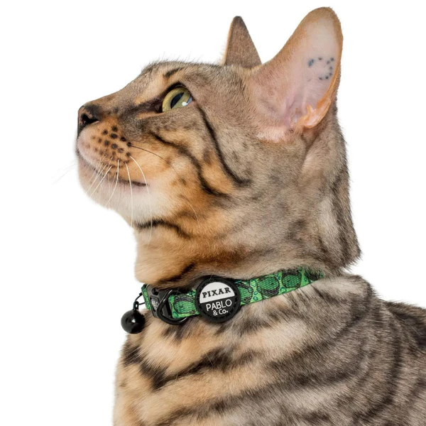
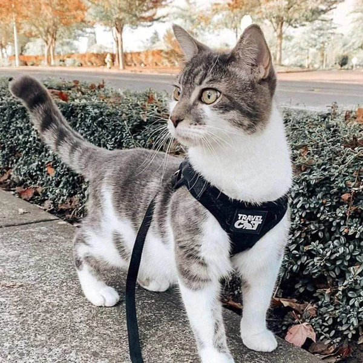
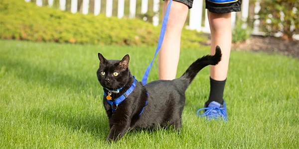
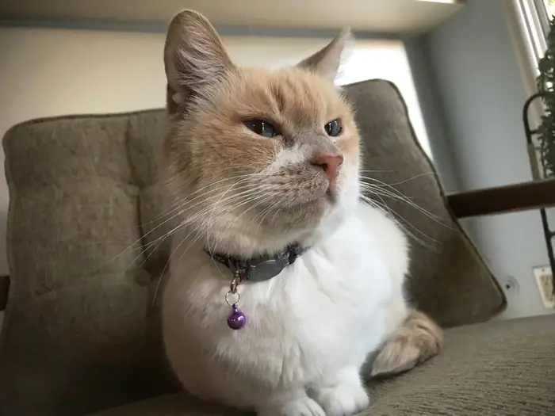
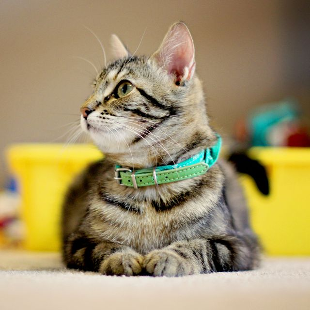

A standard flat leash is a common choice for dogs and cats. Flat cat leashes tend to be narrower than dog leashes, but that's not always the case. These are a good choice because they are less likely to tangle when a cat rolls in the grass, and they are easy to untangle when knots do happen. Because of this resilience, you may want to start your kitten's leash training young -- think around 8 weeks of age, if possible. A young kitten may be more open to the concept of walking outdoors with a leash than a more seasoned counterpart. Cat flea collars are one of the most effective ways of dealing with fleas when used correctly. Experts say you should put a collar on your kitten as soon as she's ready to explore the world around her. This would be around the time when she's 2 to 6 months old. The more important factor here is her weight and the size of her neck as these will determine the fit of the collar.
|  |  |  |  |  |